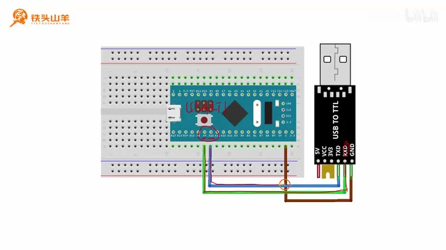
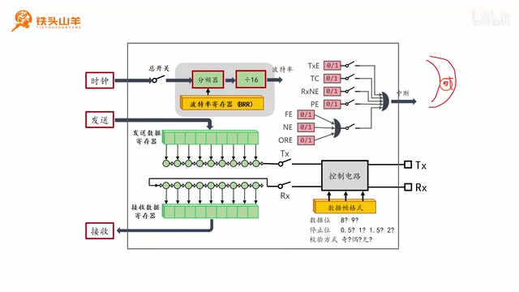
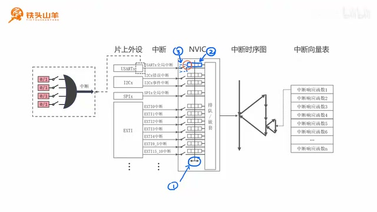
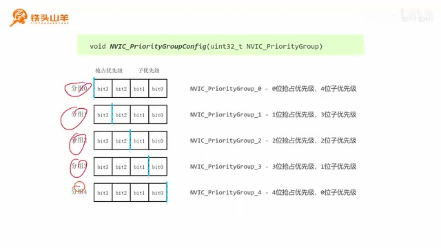
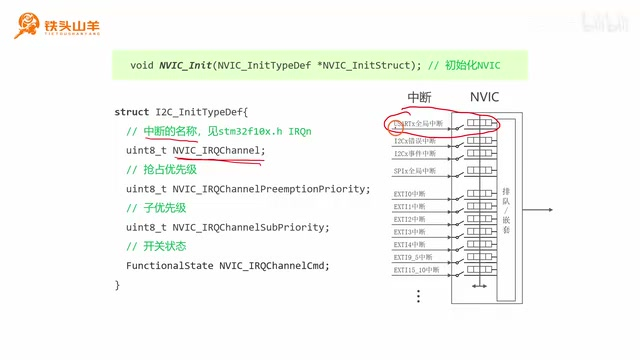
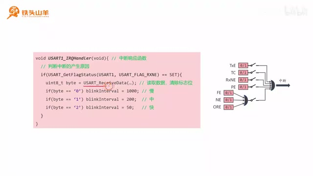

P035 · 6.3 （中断）串口中断编程实验¶
实验目标与分工¶
各位同学大家好，我是铁头山羊。今天我们开始学习第六章第三节，通过一个串口中断编程实验练习之前学过的知识。本套视频所需的材料都包含在开发套件包里；可以扫描画面上的二维码进入淘宝店铺购买。购买套件后可以获得课程课件和源码，也可以加入答疑群直接交流。这个实验之前介绍过，今天再梳理一遍：把单片机通过串口连接到电脑，用电脑上的串口调试助手发送命令，控制板载 LED 的闪烁速度。发送字符 0 时慢闪，发送 1 时按正常速度闪，发送 2 时快闪。
本期分成五部分：先写闪灯代码，再初始化串口；然后配置 USART 的 RXNE 标志位，使它能触发中断；接着配置 NVIC；最后编写中断响应函数。前两部分是准备工作：LED 闪烁放在常规程序里循环执行，串口接收和调速放在中断响应函数里。
建立工程并初始化板载 LED¶
实验控制的是板载 LED，它连接到单片机 PC13 引脚，接法为输出开漏，因此要把 PC13 初始化为输出开漏模式。先从百度网盘下载模板工程的压缩包，解压到当前文件夹，把生成的文件夹重命名为 USART_IT_Test（USART 指串口，IT 是 interrupt 的缩写，表示中断测试），再把工程文件也改成同样的名字并双击打开。
在 default/user/main.c 中声明并实现 App_OnBoardLED_Init，用于板载 LED 初始化。先使能 GPIOC 时钟，再填写 IO 初始化结构体：引脚编号为 GPIO_Pin_13，模式选输出开漏 GPIO_Mode_Out_OD，最大输出速度选 2 MHz，最后调用 GPIO 初始化函数。将这个函数放在 main 开始处调用，LED 的初始化就完成了。
程序有两个任务：在主循环里控制 LED 闪烁，在串口中断里接收数据、改变闪烁频率。主循环每轮先点亮 LED，延迟一段时间，再熄灭 LED，再延迟一段时间。由于延迟要能改变，不能继续写死为原先的 100 ms，因此声明一个全局无符号 32 位变量 blinkInterval（blink 是闪烁，interval 是间隔），初值设为 1000，并把它作为两次延迟的参数。以后只要改这个变量，就能改变延迟并调节闪烁速度。
在 main.c 顶部声明这个变量。在 while 循环中，对 PC13 调用 GPIO_WriteBit：写 Bit_RESET 点亮板载 LED，延迟 blinkInterval；再写 Bit_SET 熄灭，延迟 blinkInterval。因为用到了延迟函数，还要包含 my_lib/delay.h。至此闪灯代码写好。
完成闪灯代码并调试¶
刚才的板载 LED 初始化函数写完后，把它放到 main 方法一开始调用。现在梳理实验思路：两个任务分别是控制板载 LED 闪烁，以及通过串口接收数据来改变闪灯频率。因此闪灯代码放在常规主程序里，串口接收放在中断响应函数里。
主循环每轮点亮 LED、延迟、熄灭 LED、再延迟。为了能改闪烁频率，延迟不能是之前写死的 100 ms；在顶部声明全局无符号 32 位变量 blinkInterval，表示闪烁间隔，初始值为 1000，并把它传给延迟函数。改变这个变量就能改变延迟时间，进而改变闪烁速度。主循环中对 PC13 写 Bit_RESET 点亮、延迟 blinkInterval，再写 Bit_SET 熄灭并延迟；同时包含 my_lib/delay.h。
编译调试：点击左上角第二个按钮编译，确认没有错误、没有警告；再点放大镜进入调试。在 View 菜单中找到 Watch Windows，选择 Watch 打开监视窗口。把 blinkInterval 名称复制到监视窗口的输入位置，右键关闭十六进制显示。现在能看到值为 1000。全速运行，板载 LED 慢闪；将值改成 200，LED 闪得更快；改成 60，闪得更快。可见改变 blinkInterval 就能控制板载 LED 的闪烁速度。
调试时修改的是监视窗口中的全局变量，不需要重新编译或下载就能直接观察参数变化。1000 对应慢闪，改为 200 后间隔缩短，改为 60 后间隔进一步缩短；两次亮灯和灭灯前后的延迟都取这个值，因此每轮循环的等待都随变量一起改变。确认这个变量能按预期控制速度后，再开始做串口接收部分。
连接 USB 转 TTL 并开始串口初始化¶
闪灯代码完成后，实验代码完成了一半。另一部分是通过串口接收数据；在使用串口前，先初始化串口并连接电路。实验要让单片机 USART1 和电脑通信，因此中间加一个 USB 转 TTL 模块。默认 USART1 的 TX 在 PA9，RX 在 PA10；将 PA9 接 USB 转 TTL 的 RXD，将 PA10 接它的 TXD，再用一根线把单片机 GND 和模块 GND 相连。
最终连接时，PA9 和 PA10 分别接模块的 RXD、TXD；ST-Link 调试器接到板上的调试接口。连接好后开始初始化 USART。初始化分两步：初始化 TX、RX 引脚，再初始化 USART 本身。TX 是发送引脚，在 PA9，要设为复用推挽 AF_PP；RX 是接收引脚，在 PA10，要设为输入上拉 IPU。
声明 App_USART1_Init 函数并实现。首先做 IO 初始化，再初始化 UART1。PA9 属于 GPIOA，开启 GPIOA 时钟，声明 GPIO 初始化结构体，填写引脚 GPIO_Pin_9、复用推挽模式 GPIO_Mode_AF_PP 和最大输出速度 2 MHz，然后调用 GPIO 初始化函数。这里设置速度为 2 MHz 足够。

接线示意图标出开发板与 USB 转 TTL 模块之间的 TX/RX 交叉连线和共地。 · 原片 09:00
接线图中，板子上的 PA9 与 USB 转 TTL 的 RXD 相连，PA10 与模块的 TXD 相连，电源地连到模块 GND；收发端交叉，电脑端才能接收单片机发出的数据并向单片机发送数据。板子上的 ST-Link 连接到调试接口，供下载和调试使用。讲解随后回到代码，先在 main.c 声明 App_USART1_Init，并在文件下方实现，按“GPIO 引脚先初始化、USART 外设后初始化”的顺序编写。
初始化 PA10 和 USART1¶
PA9 初始化后，再初始化 PA10。PA10 也属于 GPIOA，先使能 GPIOA 时钟；给 GPIO 初始化变量填写 IO 编号 GPIO_Pin_10 和模式 GPIO_Mode_IPU（输入上拉）。这是输入模式，不需要填写最大输出速度，最后调用 GPIO 初始化函数。
IO 引脚初始化完毕，接下来初始化 USART 模块。USART 是芯片内部的片上外设，使用前要先开它的时钟。在代码中调用 RCC_APB2PeriphClockCmd，使能 RCC_APB2Periph_USART1。然后调用 USART_Init 配置串口：参数包括波特率和数据帧格式，帧格式包括 8 位还是 9 位数据、停止位长度为 0.5、1、1.5 或 2 位，以及奇校验、偶校验或无校验；还要指定只发送、只接收或双向收发。本次选常用波特率 115200、8 位数据、1 位停止位、不使用校验，并设为收发双向。
声明 USART_InitTypeDef 变量。波特率设为 115200；硬件流控本次不使用，设为 USART_HardwareFlowControl_None（也可以不填，若填写就选 None）；通信方向设为收发双向 USART_Mode_Rx | USART_Mode_Tx；校验设为 USART_Parity_No；停止位设为 USART_StopBits_1；数据长度设为 USART_WordLength_8b。调用 USART_Init(USART1, &USART_InitStruct) 初始化 USART1。
代码中先声明 GPIO_InitTypeDef 变量，再对其成员赋值，PA9 的编号明确填 GPIO_Pin_9；完成 PA9 初始化后才处理 PA10。PA10 的编号是 GPIO_Pin_10，输入上拉模式使用 GPIO_Mode_IPU。USART 时钟通过 APB2 外设时钟接口开启，因为 USART1 挂在 APB2 上。串口参数放入 USART_InitTypeDef 结构体，最后把 USART1 和结构体地址传给 USART_Init。硬件流控本次没有用到；讲解提到可以不设置该项，若填写则用 None。
开启 USART 并验证串口¶
USART 参数设置好后，还要闭合模块总开关，模块才会开始工作。调用 USART_Cmd(USART1, ENABLE)，ENABLE 表示闭合开关。把 USART1 初始化函数放在 main 中调用，到此初始化完成。
先做临时测试：包含 my_lib/usart.h，调用 My_USART_SendString(USART1, "hello world") 发送一行字符串。编译没有错误和警告后下载代码。下载前将 ST-Link 调试器和 USB 转 TTL 模块接到电脑，再打开串口调试助手，设置串口号、波特率 115200、无校验、8 位数据、1 位停止位、不使用硬件流控，点击按钮打开串口。将接收设置设为 ASCII（讲解中读作“ask ask”），按下单片机复位按钮，可见打印出 Hello world。这证明串口测试通过、初始化没有问题。然后删掉临时测试代码和头文件，本次实验不需要它们。
串口初始化完成后进入第三部分：配置 RXNE 标志位，让它触发 USART 中断。程序分成主循环中闪灯和中断响应函数中接收数据两部分。每次接收到数据时要产生中断：RXNE 从 0 变为 1 时触发中断，随后调用中断响应函数。
回看 USART 结构图右上角，粉红色的 0 和 1 表示 USART 标志位。它们通过一个逻辑或门接到 USART 全局中断。或门有多个输入，只要其中一个为 1，输出就是 1；只有所有输入都是 0，输出才是 0。这样多个标志位共用一个中断，只要有一个标志位置 1，就触发中断。标志位与或门之间还有中断屏蔽开关；断开开关，标志位就不能触发中断。要让 RXNE 触发 USART 全局中断，就要闭合 RXNE 后面的开关。

USART 标志位经逻辑或门汇合到共用的全局中断，标志位旁的开关用于屏蔽中断。 · 原片 19:26
发送测试字符串时，第一个参数指定 USART1，第二个参数是 hello world；调用的是自带库中的串口发送字符串函数。串口调试助手的参数要与单片机配置匹配：115200 波特率、8 位数据、1 位停止位、不校验、不启用硬件流控。打开串口后再复位单片机，屏幕上出现一行 Hello world 才算验证成功。此测试用于确认初始化链路正常，之后清除包含 usart.h 的临时代码，避免与后续实验内容混在一起。
配置 RXNE 的理由是：每接收一个字节，接收数据寄存器非空状态改变，USART 的 RXNE 标志位由 0 变成 1，由此提出全局中断请求。USART 的 TXE、TC、RXNE、PE、FE、NE、ORE 等标志位共享全局中断，门电路把这些请求合并；相应开关可以屏蔽单项请求，所以只要打开 RXNE 的中断开关即可响应接收事件。
配置 RXNE 的中断开关¶
用 USART_ITConfig 配置 USART 中断。IT 是 interrupt（中断）的缩写，Config 是配置；这个接口用来控制标志位后面的开关。它有三个参数：第一个是串口名称，本次填 USART1；第二个是标志位名称，例如 USART_IT_TXE、USART_IT_TC，本实验用 USART_IT_RXNE；第三个是开关状态，ENABLE 表示闭合，DISABLE 表示断开。回到 USART 初始化函数，在 IO 引脚初始化、USART 模块初始化之后调用 USART_ITConfig(USART1, USART_IT_RXNE, ENABLE)，使 RXNE 能触发 USART 全局中断。
NVIC 是中断管理器¶
第四部分配置 NVIC。NVIC 是嵌套向量中断控制器（Nested Vectored Interrupt Controller），专门管理中断。它与 GPIO、USART、SPI、I2C 等片上外设不同，属于 Cortex-M3 内核的一部分。类比人体，片上外设像一个个器官，NVIC 则属于大脑。内核一直工作，所以 NVIC 的时钟始终开启；使用前不用单独开时钟，也无法把它关闭。
回顾中断结构图：左边是芯片上的片上外设，它们可以产生一个、两个或多个中断。本次用 USART 模块产生中断；USART 只能产生一个 USART 全局中断。例如 USART1 产生 USART1 全局中断，USART2、USART3 也各有自己的全局中断。

中断控制图把片上外设产生的中断送入 NVIC，再由 NVIC 管理和调度。 · 原片 25:00
USART_ITConfig 的三个参数依次是串口实例、要控制的中断标志名称、功能状态。讲解举了 TXE 和 TC 两种标志作对照，本例具体使用接收数据寄存器非空标志 USART_IT_RXNE，以 ENABLE 打开其屏蔽开关。注意此时使能的是 USART 外设内部该标志位的中断请求；NVIC 的全局中断通道开关还要在后面另行配置。
NVIC 与前面学习的片上外设还有一个实用区别：USART、GPIO 等外设使用前需要开各自时钟，而 NVIC 是 Cortex-M3 内核功能，内核时钟一直开启，不做独立的时钟使能操作。每个 USART 实例只能产生一个全局中断请求；RXNE 等多个内部标志都可以经各自开关共用这个请求。
NVIC 的四项功能和分组¶
前面已经看到：闭合 USART 标志位后的开关后，RXNE 可以产生 USART 全局中断。芯片中有许多类似中断，因此由 NVIC 这个“管理员”管理。NVIC 主要有四项功能：第一，为每路中断保存四个比特位来表示优先级；第二，寄存器中有一条可左右移动的分界线，决定优先级分组；第三，每路中断有一个开关，闭合使能、断开屏蔽；第四，根据中断优先级和中断信号对中断排队或进行嵌套。
要使用中断编程，先配置三件事：优先级分组，即多少位用于抢占优先级、多少位用于子优先级；给中断设置优先级，表示紧急程度；闭合对应开关使能中断。
使用 NVIC_PriorityGroupConfig 配置分组。Priority 表示优先级，Group 表示分组，Config 表示配置。优先级由四个比特位组成，因此有五种分组方式。参数 NVIC_PriorityGroup_0 到 NVIC_PriorityGroup_4 分别对应分组 0 到分组 4。分组代码通常写在程序开始处，例如 main 第一行。本次选择分组 2，即两位抢占优先级和两位子优先级。

四个优先级比特可按五种方式分配给抢占优先级和子优先级；本实验选分组 2。 · 原片 26:48
四个比特位的分配方式从分组 0 到分组 4 逐步改变：分组 0 将四位都给子优先级；分组 1 是一位抢占、三位子优先级；分组 2 是两位抢占、两位子优先级；分组 3 是三位抢占、一位子优先级；分组 4 将四位都给抢占优先级。本次例子明确选择 NVIC_PriorityGroup_2，因此随后设置抢占和子优先级时，各自能取 0、1、2、3。接下来 NVIC_Init 同时负责指定某一路通道的优先级并控制该通道的使能开关。
设置 USART1 的 NVIC 中断通道¶
分组设置后，下面还要给中断设置优先级并闭合 NVIC 开关，使能 USART1 全局中断。用 NVIC_Init 对 NVIC 中的一路中断初始化。它接收结构体指针，因此先声明 NVIC_InitTypeDef 类型的结构体变量。由于 NVIC 初始化属于串口初始化的一部分，把这段代码放在 USART 初始化函数中；执行顺序是初始化 IO、初始化 USART、配置 RXNE 中断开关，最后配置 NVIC。
查看 NVIC_InitTypeDef 结构体，它有四个成员。第一个 NVIC_IRQChannel 设置中断名称。要配置 USART1 全局中断，就在 stm32f10x.h 头文件的 IRQn 枚举类型里查找并填写 USART1_IRQn：切回 main.c 顶部，打开已引用的 stm32f10x.h，搜索 IRQn，找到各中断名称中的 USART1_IRQn，复制到结构体成员。
接下来两个成员分别设置抢占优先级 NVIC_IRQChannelPreemptionPriority 和子优先级 NVIC_IRQChannelSubPriority。优先级代表中断紧急程度。当前程序只有一路中断，具体值不重要，因此两者都设为 0。分组 2 给抢占优先级和子优先级各两位，所以两者的取值范围都是 0～3，不能超出范围。

注意：截图声明行显示 `struct I2C_InitTypeDef`，这是与本节讲解不符的画面类型名错误；此处讲解的 NVIC 结构体是 `NVIC_InitTypeDef`。截图其余成员显示 NVIC 通道字段。 · 原片 29:00
注意：截图中的声明行写成了 struct I2C_InitTypeDef，与本节正在讲解的 NVIC_InitTypeDef 不一致；截图其余成员展示的是 NVIC 通道字段。这里的声明行是画面中的类型名错误，NVIC 初始化应使用正文所述的 NVIC_InitTypeDef。
在 main.c 顶部已包含 stm32f10x.h，因此可以从该头文件的 IRQn 枚举中复制中断名称，而不必凭记忆输入。结构体的前三项分别对应通道号、抢占优先级和子优先级；即便当前只有一路中断，仍需按接口要求给这两个优先级成员赋值。分组二的两位范围是二进制 00 到 11，即十进制 0 到 3，随意使用其他超界值会违反所选分组的范围。
使能中断并编写 USART1_IRQHandler¶
结构体第四个成员 NVIC_IRQChannelCmd 控制 NVIC 中的开关：填 ENABLE 闭合开关、使能中断。随后调用 NVIC_Init(&NVIC_InitStruct)，完成 NVIC 配置；整个初始化代码也就完成了。
最后写中断响应函数。当 RXNE 从 0 变为 1 时中断触发。处理逻辑是读取收到的数据，再按字符 0、1 或 2 改变闪烁速度：0 对应间隔 1000 ms（一秒），1 对应 200 ms，2 对应 50 ms。
在 startup 文件夹中打开 startup_stm32f10x_md.s 启动文件，找到 USART 对应的中断响应函数名 USART1_IRQHandler。名称不能写错，否则函数不会生效；直接从启动文件复制，再粘贴到 main.c 的 main 函数下面。它的返回值和参数都是空。
USART 全局中断由多个标志位共用，发生时无法直接知道是 TXE、TC 还是 RXNE 触发的，所以处理前还要检查 RXNE。使用 USART_GetFlagStatus 查询 USART1 的 RXNE；只有状态等于 SET（1）时，才确认这次中断由 RXNE 触发，并处理刚才读出的数据。

中断响应函数先检查 RXNE，再读取数据并根据字符 0、1、2 设置不同的闪烁间隔。 · 原片 33:05
查询 IRQn 枚举时，讲解先打开 main.c 引用的芯片头文件并搜索 IRQn，在枚举列表里找到 USART1 对应项，复制 USART1_IRQn。随后在启动文件中找到函数符号 USART1_IRQHandler；枚举项用于配置 NVIC 通道，处理函数名则由启动文件确定，两个名字用途不同。
USART 全局中断由多个标志位共用，发生时无法直接知道是 TXE、TC 还是 RXNE 触发的，因此还要查询 RXNE。代码使用 USART_GetFlagStatus(USART1, USART_FLAG_RXNE)；只有状态等于 SET（1）时，才确认这次中断由 RXNE 触发。然后在这个条件分支中调用 USART_ReceiveData(USART1) 读取 USART1 的 RDR 数据，并按字符判断、更新 blinkInterval。
编译、下载并验证实验¶
把检查 RXNE 的代码和数据处理代码放在一起，整个程序就写完了。点击右上角按钮编译，确认没有错误、没有警告，再下载程序。
测试时保持串口打开，发送设置选择 ASCII，然后按下单片机复位按钮。初始状态下 LED 慢闪，因为 blinkInterval 的初值是 1000。发送字符 1，闪烁速度快一些；再发送字符 2，LED 就快闪，闪烁频率明显加快。实验现象达到了预期。
本期通过简单实验了解了 STM32 中断编程的大体流程。本章内容到这里全部讲完；今后学习其他片上外设时还会用到中断编程，到时再练练手。好的，以上就是本期视频的全部内容，感谢大家收看。我是铁头山羊，我们下期视频再见。
测试前串口调试助手保持已经打开，发送区设置为 ASCII。复位后先观察默认慢闪，再依次发送字符 1 和 2，可看到速度先变快，再变为快闪。发送内容是字符而不是数值变量；中断里比较接收到的字符，因此测试也要按字符发送。这说明 RXNE 中断、数据读取、命令判断和主循环间隔变量之间配合正常。